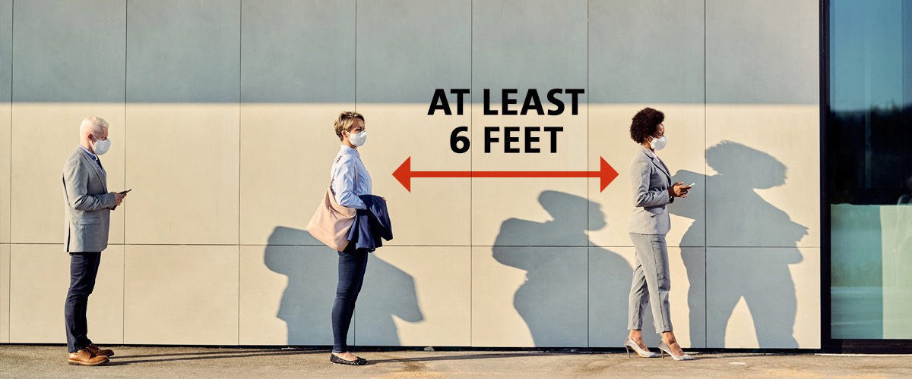

3.What Society Should Be Aware When Combating COVID-19 IN Hong Kong
3.1:Current situation of society facing C0VID-19
How the government regulate the society:
Members of the public are advised strongly to reduce social contact to protect themselves and others: Maintain social distance, keep a distance of at least 1 metre from others. Minimise gatherings and trips outside home. Minimise meal gatherings. Use serving utensils. Avoid crowded places. Wear a mask if there is a need to go to such places and when using public transport. Avoid handshakes and physical contacts.
Future adjustment:
The Government has been reviewing the feasibility of relevant measures and will make adjustments on a timely basis in view of the latest development of the disease. Putting in place the new requirements to reduce gatherings could help enhance social distancing. When making the regulations, the Government has taken into account the activities and premises / places with higher infection risks of COVID-19, as well as overseas practices.
3.2:Experts' opinion
Health officials earlier said imported cases only accounted for 1.5 per cent of the total number of daily infections in the city, while 40 per cent of the infected visitors tested positive at the airport and 35 per cent during the first three days. Less than 5 per cent tested positive eight days after arrival.Top microbiologist and government adviser Professor Yuen Kwok-yung also suggested Covid-19 had transformed from “a highly destructive infectious disease to a milder endemic one”, adding most of the population had either been vaccinated or infected, which had greatly reduced the chances of serious cases or fatalities.
In the Press Conference of Anti-epidemic Command Coordination Group at 23 in September, governmnet announced the "0+3" measure.
As for the “0+3” measure, it means that inbound travelers only need to spend three days for medical observation after all quarantine hotels are canceled. During these three days, they will be given an Amber Health Code and can go outside. Yet, they will still be barred from certain premises restricted by health regulations, including restaurants and bars.
3.3:How can the society compacting COVID-19？
Although experts and government showed that the severity of COVID-19 has decreased compared to the peak of the epidemic, related policy has been let down. However, the public still have to pay attenrion to the pandemic.These are some tips for the public can take below.